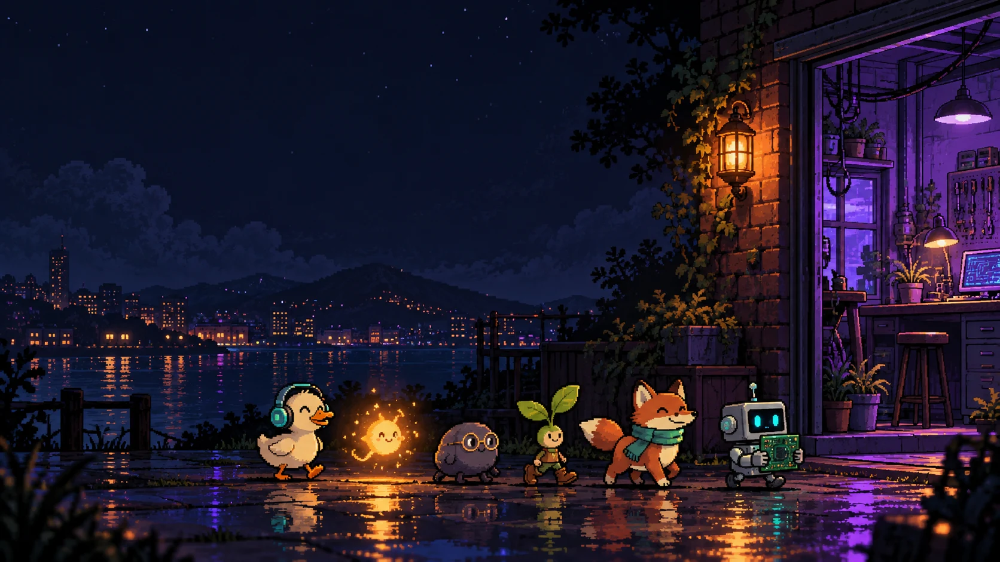
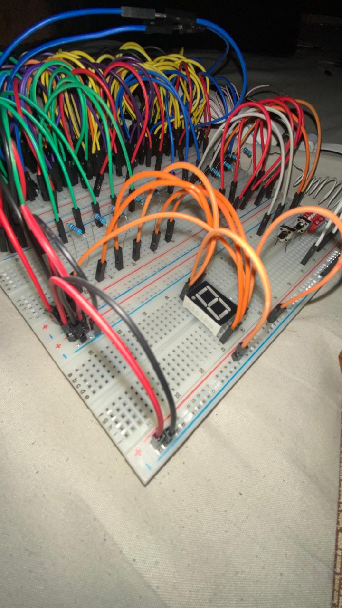

MY PROJECT TOOLKIT
Programming & electronics
My projects explore Java, Python, C, and web technologies, alongside electronics calculations and problem solving.

NOLUTHANDO BASI · COMPUTER ENGINEERING STUDENT
I build software tools and digital circuits at Cape Peninsula University of Technology.
COME ON IN
Pick an object. Follow your curiosity.
Complete this simplified series circuit: 5 V supply → switch → resistor → LED → ground.
LED off
Currently learning: building for the web.
I’m also making room to write about the learning itself.
Open my build journal →01 / ABOUT ME
MY PROJECT TOOLKIT
My projects explore Java, Python, C, and web technologies, alongside electronics calculations and problem solving.
CURRENTLY LEARNING
I’m learning HTML to structure pages and CSS to style them.
02 / SELECTED WORK
Software projects and engineering case studies.
A desktop calculator for Ohm’s law, resistor and capacitor combinations, LED resistors, voltage dividers, and RC timing.
Validates inputs and rejects nonfinite results. Requires JDK 17 or newer and a graphical desktop.
Calculate monthly income, expenses, and the remaining balance in South African rand, with exact decimal arithmetic.
Runs with Python 3.10+. Budget entries stay in the current session; they are not saved or uploaded.
Navigate three maze difficulties using W, A, S, and D. Reach the exit, track your moves, and improve your best score.
Runs in a terminal with Python 3.10+. Best scores are saved locally beside the game.
· View original codeA first-to-three terminal match against a random computer opponent. Ties keep the score unchanged; invalid input is rejected.
Build with a C11 compiler. Automated tests cover every round outcome and match scoring.
· View original codeA little progress, every day.
Add, edit, complete, and filter tasks in a responsive to-do app. Progress updates as you work through your list.
Run locally with Node.js 18+. Tasks are saved in the current browser, with no account or cross-device sync.
A local student planner for modules, assignments, revision sessions, deadlines, and completion tracking.
Python 3.10+; records persist in a local SQLite database.
A desktop Snake game with keyboard controls, scoring, pause, restart, and increasing difficulty.
Windows .NET Framework 4.x; source and executable included.
· View original codeA graphical Sudoku game with unique puzzles, pencil notes, hints, undo, and light and dark themes.
Windows desktop app; downloadable release and C++17 source.
· View original codePlay with a friend or challenge a Minimax computer opponent, with replay and session scores.
Portable terminal game; build with a C11 compiler.
· View original code
1 / 4 - Full prototype and display
Choose a thumbnail to explore the build. Select the large photo to view it in full.
From logic design to verified hardware
I led this CPUT group project as its primary contributor, working across design, simulation, testing preparation and documentation.
Verified hardware, 24 NAND gates and six 74HC00 packages. Eight static netlist cases also passed. A coursework case study with rights reserved.
03 / A LITTLE EXPERIMENT
Meet the NAND gate—the building block of my ALU project. Flip the inputs and see what happens.
See how these gates become an ALU ↗NAND / LIVE LOGIC
The output is on unless both inputs are on.
04 / THE BUILD JOURNAL
Notes from an engineer and a writer.
ENTRY 01 / REFLECTIONS
On being a beginner, making room for uncertainty, and finding a place in engineering without leaving the writer behind.
Read the journal entry →KEEP IN TOUCH